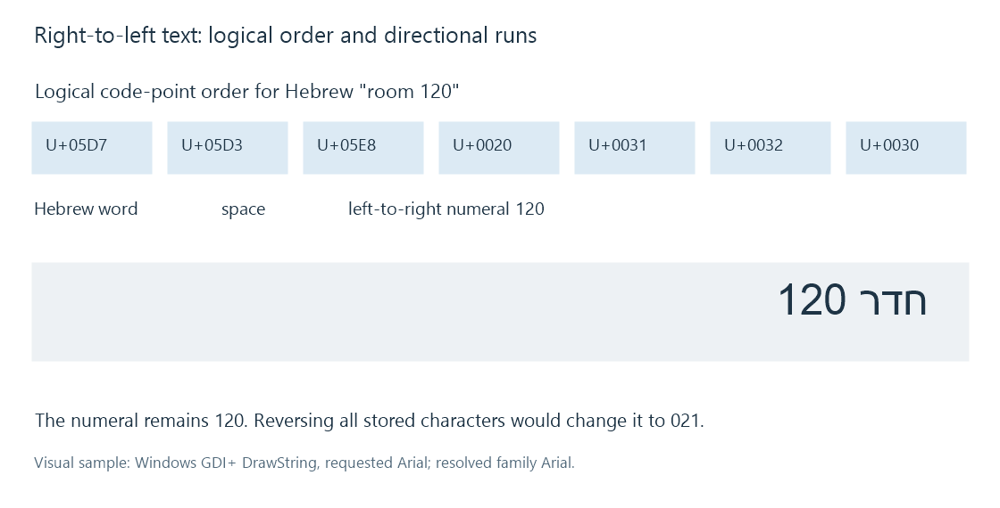

Right-to-left subtitles
Right-to-left subtitle rendering resolves logical text order, bidirectional runs and script shaping separately from caption alignment.
Right-to-left subtitles need text processing that understands logical order, bidirectional display and the script's shaping rules. Arabic and Hebrew captions can also include left-to-right elements such as numbers, Latin names and file identifiers.
Reversing every character in a subtitle file is not a rendering solution. It changes the content and also reverses the embedded left-to-right runs.
Store the logical sequence
Take the Hebrew phrase חדר 120, meaning “room 120”. Its stored code-point sequence contains the Hebrew word, a space, and the digits 1, 2, 0.
The Hebrew word is displayed in its right-to-left reading direction. The number is displayed as 120, retaining the left-to-right order of its digits. Reversing the whole sequence would turn that number into 021.

The diagram uses a basic mixed-direction example. Complex punctuation, embedding and line breaks require the algorithm's full context.
Paragraph direction supplies a base context
The Unicode Bidirectional Algorithm resolves direction from character classes, paragraph context and applicable formatting controls. A strong Hebrew or Arabic character and a strong Latin character provide different directional evidence.
Neutral punctuation and spaces are resolved in context. Parentheses or punctuation near a Latin identifier can therefore appear differently depending on the surrounding paragraph/run structure.
A renderer can receive a base direction from its presentation model or determine it according to the applicable rules. The format's specification matters; an app should not invent a byte-reversal rule because a line begins with digits.
Direction also interacts with line wrapping. The logical sequence is shaped and arranged for the line under the appropriate bidi model. Moving already visually reversed text through another bidi renderer can reorder it a second time.
Alignment positions the box; direction orders the text
A right-aligned caption box is placed against its right boundary. That setting does not establish that every character inside it must be reordered right-to-left.
Likewise, a centred RTL line can remain correctly shaped and ordered. The line's alignment anchor and its paragraph/run directions are independent properties.
This distinction is especially useful for an Emby comparison where the caption sits in the expected location but numerals, punctuation or a Latin name are wrong. Changing the bottom-edge position does not repair the text's directional processing.
Isolates contain a run's directional influence
Unicode supplies directional isolates:
| Control | Code point | Purpose |
|---|---|---|
| LRI | U+2066 | Starts a left-to-right isolate |
| RLI | U+2067 | Starts a right-to-left isolate |
| FSI | U+2068 | Starts an isolate whose direction is determined from its contents |
| PDI | U+2069 | Ends the isolate |
An authoring system can use an appropriate isolate around an embedded identifier so its direction is resolved without unexpectedly influencing adjacent text. These are formatting controls, not visible letters.
Removing all nonprinting characters without understanding their roles can change the display. Adding controls indiscriminately can also change the intended structure. The correct operation follows the input text and the receiving format's permitted directional model.
Arabic shaping is an additional stage
The bidi algorithm determines ordering and directional context. Shaping selects and positions the glyphs appropriate to the script and font. Arabic letters can use contextual connected forms; combining marks need their positions relative to base glyphs.
A suitable font and shaper are needed after character decoding succeeds. A line can have correct logical order and still display disconnected forms if its rendering stage does not perform the required shaping.
Font fallback can affect that stage. A font containing individual code-point shapes is not by itself proof that a complete shaping/layout path is operating correctly.
Recognition should recover logical text
OCR begins with visible graphics. Its output needs the intended logical reading order for text conversion. Simply sorting every detected glyph by increasing x-coordinate is inappropriate for an RTL line and its mixed-direction runs.
Compare an OCR result's content and order before applying another bidi renderer. A numeral changing from 120 to 021 identifies a content/order problem rather than a harmless difference in how the caption box was positioned.